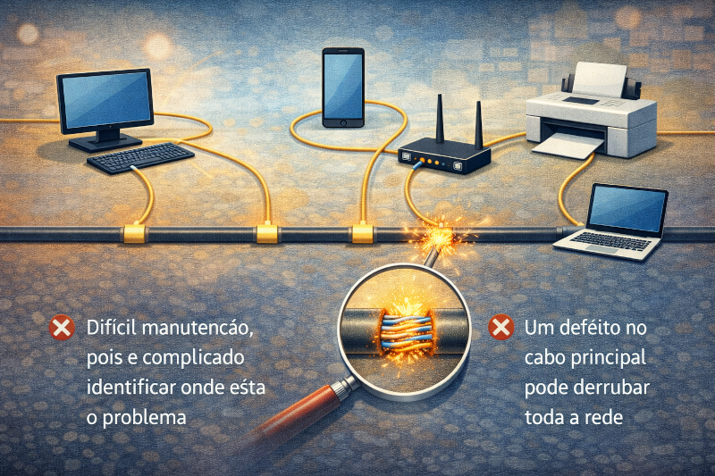
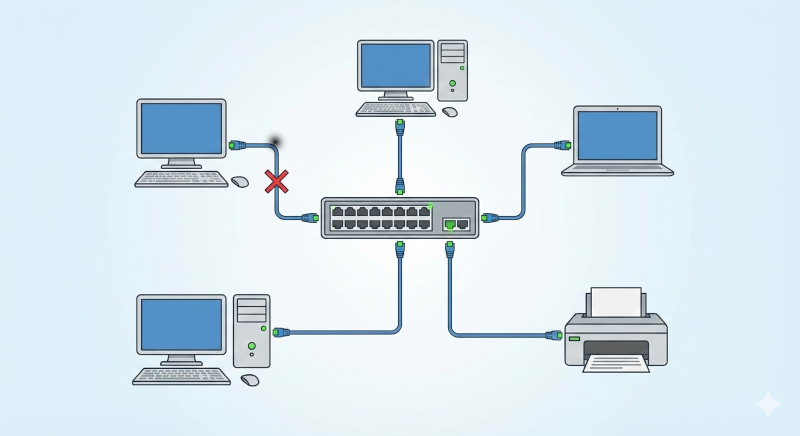
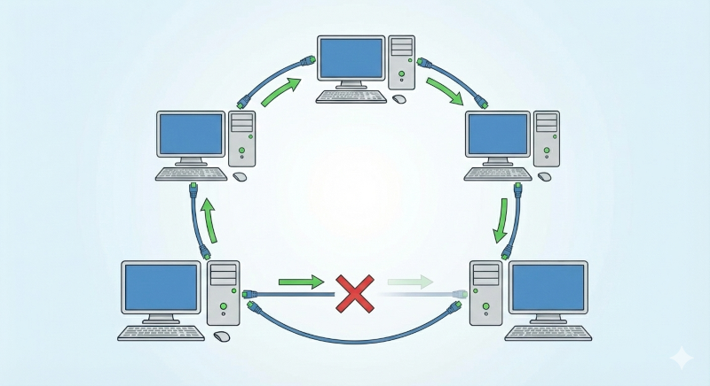
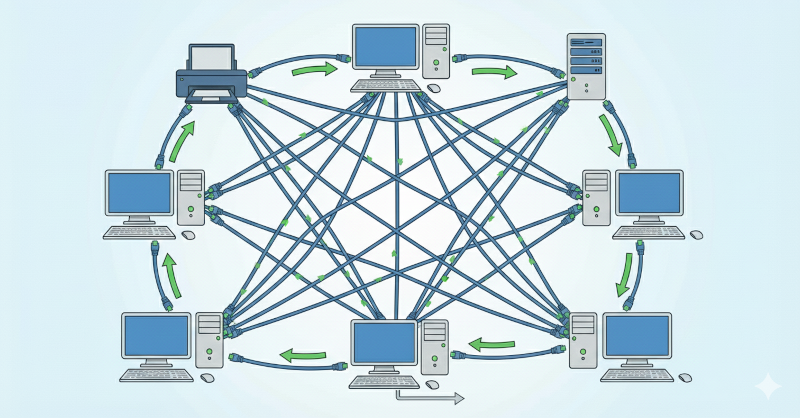
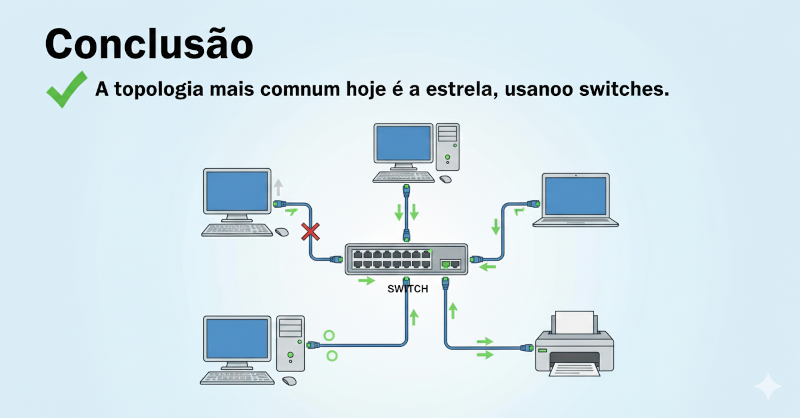

Topologia de rede é a forma como os dispositivos (computadores, roteadores, switches, etc.) são
organizados e interligados em uma rede.
Ela define como os dados circulam, influenciando o desempenho, a segurança e a facilidade de
manutenção da rede.

Topologia em Barramento
Topologia em Barramento é um tipo de topologia onde todos os dispositivos são conectados a um
único cabo principal.
Os dados trafegam por esse cabo e chegam a todos os dispositivos, mas apenas o destinatário
correto utiliza a informação.
❌ Difícil manutenção, pois é complicado identificar onde está o problema
❌ Um defeito no cabo principal pode derrubar toda a rede

Topologia em Estrela
Topologia em Estrela é o modelo em que todos os dispositivos são conectados a um ponto central,
como um switch ou roteador.
Toda a comunicação passa por esse equipamento central.
✔ É a topologia mais usada atualmente
✔ Fácil manutenção, pois se um cabo ou dispositivo falhar, apenas aquele ponto é afetado

Topologia em Anel
Topologia em Anel é uma forma de rede onde os dispositivos são ligados em sequência, formando um
circuito fechado (anel).
Os dados passam de um dispositivo para o outro até chegar ao destino.
❌ Pouco usada atualmente, pois uma falha em um ponto pode interromper toda a comunicação e a
manutenção é mais complexa.

Topologia em Malha
Topologia em Malha é uma estrutura de rede onde existem vários caminhos de comunicação entre os
dispositivos.
Isso significa que, se um caminho falhar, os dados podem seguir por outro.
✔ Alta confiabilidade e redundância, ideal para redes críticas
❌ Alto custo, devido à grande quantidade de cabos, equipamentos e configuração complexa

Conclusão
A topologia mais comum hoje é a estrela, usando switches.